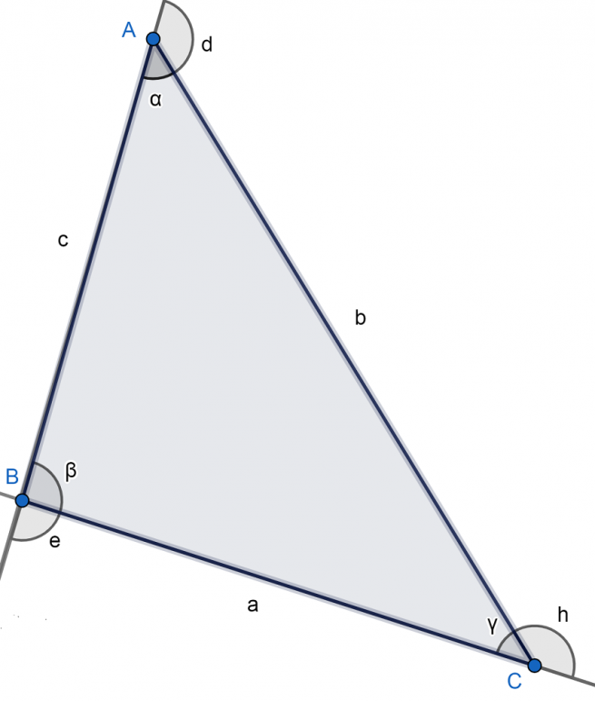

Obtusangulo
T.Obtusangulo
Este tipo de triángulo es un caso muy particular dentro de los tipos de triángulo según la medida de sus ángulos internos.
Cabe observar que el triángulo es un polígono que no puede tener más de un ángulo interior obtuso porque sus tres ángulos interiores deben sumar 180º. Entonces, si uno mide 91, por ejemplo, los otros dos deben sumar 89º.
En este punto, vale recordar que un polígono es una figura geométrica bidimensional que se constituye de la unión de distintos puntos (que no formen parte de la misma línea) mediante segmentos de recta. De ese modo, se construye un espacio cerrado.
Tipos de triángulo obtusángulo
Los tipos de triángulo obtusángulo, según la medida de sus lados, son los siguientes:
- Isosceles: Dos de sus lados miden lo mismo y el otro es distinto.
- Escaleno: Todos sus lados y ángulos interiores son diferentes.
